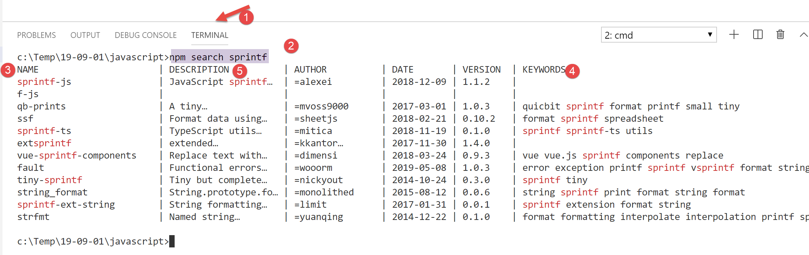
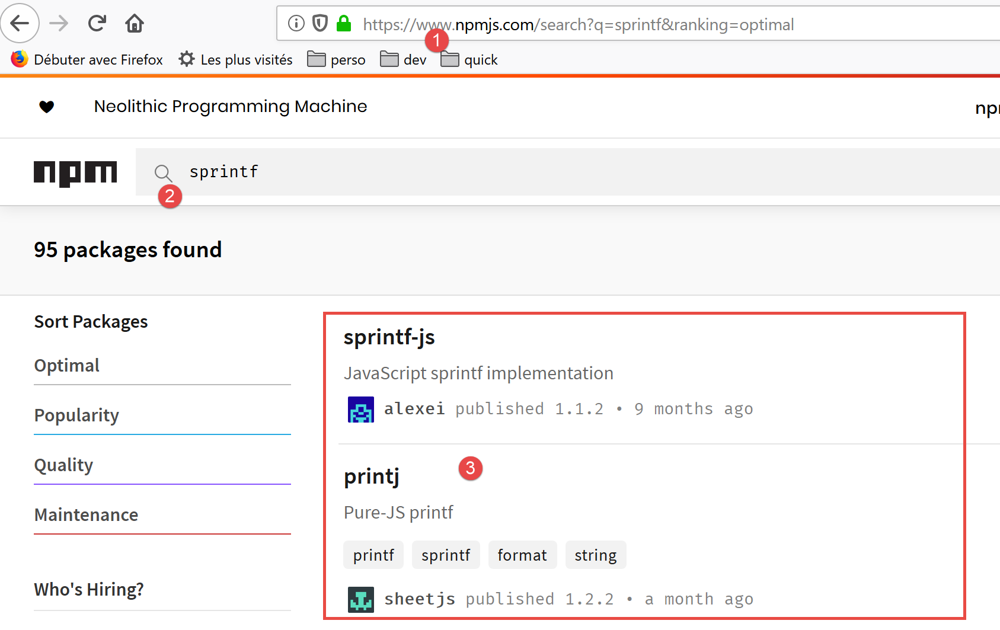

6. Las cadenas de caracteres
Las cadenas de caracteres de Javascript son muy similares a las de PHP.

6.1. script [str-01]
Lo primero que hay que entender es que, una vez creada una cadena, ya no se puede modificar. Existen numerosos métodos para generar una nueva cadena a partir de la cadena inicial, pero esta última permanece siempre inalterada. Por otra parte, una cadena de caracteres puede ser de dos tipos:
- [string] cuando se inicializa con una cadena literal;
- [object] cuando se crea como instancia de la clase [String];
'use strict';
// las cadenas de caracteres son de sólo lectura (no se pueden modificar)
// una cadena
const chaîne1 = "abcd ";
// tipo
console.log("typeof(chaîne1)=", typeof (chaîne1));
// personaje nº 2
console.log("chaîne1[2]=", chaîne1[2]);
// provoca un error
chaîne1[2] = "0";
Ejecución
[Running] C:\myprograms\laragon-lite\bin\nodejs\node-v10\node.exe -r esm "c:\Temp\19-09-01\javascript\strings\str-01.js"
typeof(chaîne1)= string
chaîne1[2]= c
c:\Temp\19-09-01\javascript\strings\str-01.js:1
TypeError: Cannot assign to read only property '2' of string 'abcd '
at Object.<anonymous> (c:\Temp\19-09-01\javascript\strings\str-01.js:12:12)
at Generator.next (<anonymous>)
6.2. script [str-02]
Este script muestra que se puede construir una cadena de caracteres de dos maneras.
'use strict';
// las cadenas de caracteres pueden ser de dos tipos
// una cadena literal
const chaîne1 = "abcd ";
// tipo
console.log("typeof(chaîne1)=", typeof (chaîne1));
// instancia de String
const chaîne2 = new String("xyzt");
// tipo
console.log("typeof(chaîne2)=", typeof (chaîne2));
// otra entrada (sin new) - tipo [string] y no [object]
const chaîne3 = String("12 34");
// tipo
console.log("typeof(chaîne3)=", typeof (chaîne3));
// el tipo [string] y el tipo [object] ofrecen los mismos métodos, los de la clase String
console.log("chaîne1.length=", chaîne1.length);
console.log("chaîne2.length=", chaîne2.length);
Comentarios
- línea 6: el método habitual para definir una cadena. [chaîne1] será de tipo [string];
- línea 10: se puede construir una cadena utilizando el constructor de la clase [String]. [chaîne2] será de tipo [object];
Ejecución
[Running] C:\myprograms\laragon-lite\bin\nodejs\node-v10\node.exe "c:\Temp\19-09-01\javascript\strings\str-02.js"
typeof(chaîne1)= string
typeof(chaîne2)= object
typeof(chaîne3)= string
chaîne1.length= 5
chaîne2.length= 4
El tipo [string] hereda los métodos de la clase [String].
6.3. script [str-03]
Este script muestra una cadena concreta con interpolación de variables.
'use strict';
// cadena
const chaîne = "Introduction à Javascript par l'exemple";
// cadena con interpolación variable
const str = `[${chaîne}].substr(3, 2)=` + chaîne.substr(3, 2)
console.log(str);
Comentarios
- línea 6: es posible tener cadenas de caracteres que contengan expresiones ${variable}, las cuales se sustituyen por el valor de la variable. Se trata de la misma lógica que las variables $ en las cadenas de caracteres PHP. Cabe destacar la notación de este tipo de cadena: está rodeada de «backstick» o apóstrofo invertido (AltGr-7 en un teclado francés);
Ejecución
[Running] C:\myprograms\laragon-lite\bin\nodejs\node-v10\node.exe -r esm "c:\Temp\19-09-01\javascript\strings\tempCodeRunnerFile.js"
[Introduction à Javascript par l'exemple].substr(3, 2)=ro
6.4. script [str-04]
La cadena con interpolación de variables sigue siendo insuficiente. De hecho, no es posible sustituir la variable por una expresión en la expresión ${variable}. Para quienes han programado en C, no hay nada como las funciones [printf, sprintf] para escribir o construir cadenas formateadas. Cientos de desarrolladores han creado miles de paquetes Javascript que conforman un ecosistema inmenso. Cuando tenemos una necesidad que Javascript no satisface de forma nativa, es hora de buscar un paquete que lo haga. Para ello utilizamos el gestor de paquetes [npm]. Este dispone de una option [search] que permite buscar una cadena de caracteres en la descripción de los paquetes. [npm] devuelve la lista de paquetes que satisfacen la búsqueda. Por lo tanto, buscaremos la cadena [sprintf] en la descripción de los paquetes:

- en la columna [4], las palabras clave de los paquetes de la columna [3];
- en la columna [5], la descripción de los paquetes de la columna [3];
El siguiente paso es ir a la página web de la herramienta [npm], [https://www.npmjs.com/] y leer la descripción de los paquetes:

En [3], se examina la lista de paquetes y se elige uno.

En la descripción del paquete se encuentra la información necesaria para instalarlo y utilizarlo:

Instalamos el paquete [sprintf-js] en un terminal de [VSCode]:

Esta instalación modificará el archivo [package.json] ubicado en la raíz de la carpeta [javascript] [2]:

Como se ve arriba, el paquete se ha instalado en [dependencies], es decir, en los paquetes necesarios para la ejecución del proyecto. Recordemos que en [devDependencies] se colocan los paquetes necesarios únicamente durante el desarrollo del proyecto. No se utilizan durante la ejecución. Esta diferencia es importante a la hora de crear la version final del proyecto para su puesta en producción. Existen herramientas para:
- reunir todos los archivos jS necesarios para la ejecución en un único archivo. Por lo tanto, los paquetes de los [devDependencies] no se incluyen en este archivo final;
- minificarlo, es decir, reducir su tamaño al mínimo posible. Para ello, por ejemplo, se eliminan todos los comentarios;
- «ocultar» el código para que resulte difícil de entender. Por ejemplo, las variables tasa, salario e impuesto se sustituirán por las variables a, b y c;
- realizar otras optimizaciones;
Esta optimización del archivo final de un proyecto jS se utiliza en programación web. Una aplicación web puede depender de un gran número de archivos Javascript. La carga de estos por parte de un navegador puede ralentizar la visualización de la primera página de la aplicación. La optimización anterior tiene como objetivo mejorar este tiempo de carga. Si los usuarios consideran que el tiempo de carga es demasiado long, la aplicación no se utilizará.
Ahora que disponemos del paquete [sprintf-js], debemos utilizarlo. Se trata del script [str-04]:
'use strict';
// uso de un paquete externo para proporcionar la función sprintf
import { sprintf } from 'sprintf-js';
// cadena
const chaîne = "Introduction à Javascript par l'exemple";
// método
console.log(sprintf("[%s].substr(3,2)=[%s]", chaîne, chaîne.substr(3, 2)));
Con ECMAScript 6, se utiliza la palabra clave [import] para importar un objeto exportado por un paquete. Para saber qué exporta el paquete, puedes consultar su código:

- en [1], clic derecho sobre el paquete importado;
- en [2], queremos ver la definición;
- en [3-4], vemos que el paquete exporta una función llamada [sprintf];
La función [sprintf] del paquete [sprintf-js] se importa con la instrucción:
import { sprintf } from 'sprintf-js';
El código completo:
'use strict';
// uso de un paquete externo para proporcionar la función sprintf
import { sprintf } from 'sprintf-js';
// cadena
const chaîne = "Introduction à Javascript par l'exemple";
// método
console.log(sprintf("[%s].substr(3,2)=[%s]", chaîne, chaîne.substr(3, 2)));
produce los siguientes resultados:
[Running] C:\myprograms\laragon-lite\bin\nodejs\node-v10\node.exe "c:\Temp\19-09-01\javascript\strings\str-04.js"
c:\Temp\19-09-01\javascript\strings\str-04.js:3
import { sprintf } from 'sprintf-js';
^
SyntaxError: Unexpected token {
at new Script (vm.js:79:7)
at createScript (vm.js:251:10)
at Object.runInThisContext (vm.js:303:10)
at Module._compile (internal/modules/cjs/loader.js:657:28)
Línea 3, no se comprende la instrucción [import]. Esto se debe a que la versión 10.15.1 de version de [node.js] utilizada en este curso (septiembre de 2019) aún no cumple con el estándar ECMAScript para la importación de paquetes denominados módulos. En 2019, [node.js] cumple con un estándar de módulos denominado CommonJS. La integración de los módulos ECMAScript por parte de [node.js] está prevista para 2020. Una vez más, los desarrolladores se han puesto manos a la obra y han creado paquetes que permiten utilizar los módulos ES6 con [node.js] desde ya (2019).
Vamos a utilizar un paquete llamado [esm] (Módulos ECMAScript). Lo instalamos en un terminal del proyecto [javascript]:

En [4], observamos que la instalación del paquete [esm] [1-3] ha modificado el archivo [javascript/package.json].
Aún no hemos terminado. Para que el módulo [esm] sea utilizado por [node.js], hay que ejecutar este último con el argumento [-r esm].
Por lo tanto, modificamos la configuración de la extensión [Code Runner] de [VSCode]:


En [11], añadimos el argumento [-r esm] y guardamos (Ctrl-S) la configuración.
Ahora podemos ejecutar el script [str-04]:
'use strict';
// uso de un paquete externo para proporcionar la función sprintf
import { sprintf } from 'sprintf-js';
// cadena
const chaîne = "Introduction à Javascript par l'exemple";
// método substr
console.log(sprintf("[%s].substr(3,2)=[%s]", chaîne, chaîne.substr(3, 2)));

6.5. script [str-05]
Esto es lo que dice la documentación sobre la función [sprintf]:
Los marcadores de posición en el formato string están marcados con % y van seguidos de uno o más de estos elementos, en este orden:
- Un número opcional seguido de un signo $ que selecciona qué índice de argumento se utilizará para el valor. Si se especifica, los argumentos se colocarán en el mismo orden que los marcadores de posición en la entrada.
- Un signo + opcional que obliga a anteponer al resultado un signo más o menos en los valores numéricos. Por defecto, solo se utiliza el signo - en los números negativos.
- Un especificador de relleno opcional que indica qué carácter se debe utilizar para el relleno (si se especifica). Los valores posibles son 0 o cualquier otro carácter precedido por una ' (comilla simple). El valor predeterminado es rellenar con espacios.
- Un signo - opcional, que hace que sprintf alinee a la izquierda el resultado de este marcador de posición. El valor predeterminado es alinear el resultado a la derecha.
- Un número opcional que indica cuántos caracteres debe tener el resultado. Si el valor que se va a devolver es más corto que este número, el resultado se rellenará. Cuando se utiliza con el especificador de tipo j (JSON), la longitud de relleno especifica el tamaño de tabulación utilizado para la sangría.
- Un modificador de precisión opcional, compuesto por un . (punto) seguido de un número, que indica cuántos dígitos deben mostrarse para los números de coma flotante. Cuando se utiliza con el especificador de tipo g, especifica el número de dígitos significativos. Cuando se utiliza en un string, hace que el resultado se trunque.
- Un especificador de tipo que puede ser cualquiera de los siguientes:
- % — devuelve un carácter % literal
- b — devuelve un número entero as un número binario
- c — devuelve un número entero as el carácter con ese valor ASCII
- d o i — devuelve un número entero as un número decimal con signo
- e — devuelve un número flotante en notación científica
- u — devuelve un entero as, un número decimal sin signo
- f — devuelve un número flotante as; véanse las notas sobre precisión más arriba
- g — devuelve un número flotante as; véanse las notas sobre precisión más arriba
- o — devuelve un entero as un número octal
- s — devuelve un string; as es
- t — devuelve verdadero o falso
- T — devuelve el tipo del argumento1
- v — devuelve el valor primitivo del argumento especificado
- x — devuelve un número entero as un número hexadecimal (en minúsculas)
- X — devuelve un número entero as o un número hexadecimal (en mayúsculas)
- j — devuelve un objeto JavaScript o array as un JSON codificado string
El script [script-05] implementa algunos de estos formatos:
'use strict';
// uso de un paquete externo para proporcionar la función sprintf
import { sprintf } from 'sprintf-js';
// cadena
const chaîne = "Javascript";
// cadenas de caracteres
console.log(sprintf("[%s, %%s]=>[%s]", chaîne, chaîne));
console.log(sprintf("[%s, %%20s]=>[%20s]", chaîne, chaîne));
console.log(sprintf("[%s, %%-20s]=>[%-20s]", chaîne, chaîne));
// números enteros
console.log(sprintf("[%d, %%d]=>[%d]", 10, 10));
console.log(sprintf("[%d, %%4d]=>[%4d]", 10, 10));
console.log(sprintf("[%d, %%-4d]=>[%-4d]", 10, 10));
console.log(sprintf("[%d, %%04d]=>[%04d]", 10, 10));
// real
console.log(sprintf("[%f, %%f]=>[%f]", -10.5, -10.5));
console.log(sprintf("[%f, %%10.2f]=>[%10.2f]", -10.5, -10.5));
console.log(sprintf("[%f, %%-10.2f]=>[%-10.2f]", -10.5, -10.5));
console.log(sprintf("[%f, %%010.3f]=>[%010.3f]", -10.5, -10.5));
// json
console.log(sprintf("personne (%%j)=%j", { nom: "mathieu", âge: 34 }));
// tipo
console.log(sprintf("type personne (%%T)=%T", { nom: "mathieu", âge: 34 }));
// booleano
console.log(sprintf("booléen (%%t)=%t", 4 === 4));
Ejecución
[Running] C:\myprograms\laragon-lite\bin\nodejs\node-v10\node.exe -r esm "c:\Data\st-2019\dev\es6\javascript\strings\str-05.js"
[Javascript, %s]=>[Javascript]
[Javascript, %20s]=>[ Javascript]
[Javascript, %-20s]=>[Javascript ]
[10, %d]=>[10]
[10, %4d]=>[ 10]
[10, %-4d]=>[10 ]
[10, %04d]=>[0010]
[-10.5, %f]=>[-10.5]
[-10.5, %10.2f]=>[ -10.50]
[-10.5, %-10.2f]=>[-10.50 ]
[-10.5, %010.3f]=>[-00010.500]
personne (%j)={"nom":"mathieu","âge":34}
type personne (%T)=object
booléen (%t)=true
6.6. script [str-06]
El script [str-06] presenta algunos métodos de la clase [String] que también se pueden utilizar en el tipo [string]:
'use strict';
// uso de un paquete externo para proporcionar la función sprintf
import { sprintf } from 'sprintf-js';
// cadena
const chaîne = " Introduction à Javascript ";
// algunos métodos
// substr(10,2): 2 caracteres a partir del número 10
console.log(sprintf("[%s].substr(10,2)=[%s]", chaîne, chaîne.substr(10, 2)));
// recorte: eliminación de espacios en blanco al principio y al final de la cadena (blank=b \t \r \n \f)
console.log(sprintf("[%s].trim()=[%s]", chaîne, chaîne.trim()));
// toLowerCase: transformación a minúsculas
console.log(sprintf("[%s].toLowerCase=[%s]", chaîne, chaîne.toLowerCase()));
// toUpperCase : transformación en mayúsculas
console.log(sprintf("[%s].toUpperCase=[%s]", chaîne, chaîne.toUpperCase()));
// indexOf: posición de una cadena buscada dentro de la cadena, -1 si la subcadena no existe
console.log(sprintf("[%s].indexOf('Java')=[%s]", chaîne, chaîne.indexOf('Java')));
console.log(sprintf("[%s].trim().indexOf('abcd')=[%s]", chaîne, chaîne.indexOf('abcd')));
// incluye: true si la cadena buscada está en la cadena
console.log(sprintf("[%s].includes('Java')=[%s]", chaîne, chaîne.includes('Java')));
// length: longitud de la cadena - no es un método sino una propiedad
console.log(sprintf("[%s].length=[%s]", chaîne, chaîne.length));
// slice (7,10): cadenas de caracteres del 7 al 9
console.log(sprintf("[%s].slice(7,10)=[%s]", chaîne, chaîne.slice(7, 10)));
// match: busca una expresión en la cadena - esta expresión puede ser una expresión regular
// /intro/i: expresión regular que denota la cadena [intro] en mayúsculas o minúsculas
// devuelve la cadena encontrada
console.log(sprintf("[%s].match(/intro/i)=[%s]", chaîne, chaîne.match(/intro/i)));
// replace : sustituye cadena1 por cadena2 en cadena
// sustituye la primera aparición de i por x
console.log(sprintf("[%s].replace('i','x')=[%s]", chaîne, chaîne.replace('i', 'x')));
// sustituye todas las apariciones de i por x
// /i/g es una expresión regular que designa todas las (g) apariciones de i
console.log(sprintf("[%s].replace(/i/g,'x')=[%s]", chaîne, chaîne.replace(/i/g, 'x')));
// split: divide la cadena en palabras separadas por el parámetro split
// traduce la tabla de estas palabras
// /\s*/ : palabras separadas por 0 o más espacios
console.log(sprintf("[%s].split(/\\s*/)=[%s]", chaîne, chaîne.split(/\s*/)));
// /s+/ : palabras separadas por uno o varios espacios
console.log(sprintf("[%s].split(/\\s+/)=[%s]", chaîne, chaîne.split(/\s+/)));
Ejecución
[Running] C:\myprograms\laragon-lite\bin\nodejs\node-v10\node.exe -r esm "c:\Data\st-2019\dev\es6\javascript\strings\str-06.js"
[ Introduction à Javascript ].substr(10,2)=[ti]
[ Introduction à Javascript ].trim()=[Introduction à Javascript]
[ Introduction à Javascript ].toLowerCase=[ introduction à javascript ]
[ Introduction à Javascript ].toUpperCase=[ INTRODUCTION À JAVASCRIPT ]
[ Introduction à Javascript ].indexOf('Java')=[17]
[ Introduction à Javascript ].trim().indexOf('abcd')=[-1]
[ Introduction à Javascript ].includes('Java')=[true]
[ Introduction à Javascript ].length=[28]
[ Introduction à Javascript ].slice(7,10)=[duc]
[ Introduction à Javascript ].match(/intro/i)=[Intro]
[ Introduction à Javascript ].replace('i','x')=[ Introductxon à Javascript ]
[ Introduction à Javascript ].replace(/i/g,'x')=[ Introductxon à Javascrxpt ]
[ Introduction à Javascript ].split(/\s*/)=[,I,n,t,r,o,d,u,c,t,i,o,n,à,J,a,v,a,s,c,r,i,p,t,]
[ Introduction à Javascript ].split(/\s+/)=[,Introduction,à,Javascript,]